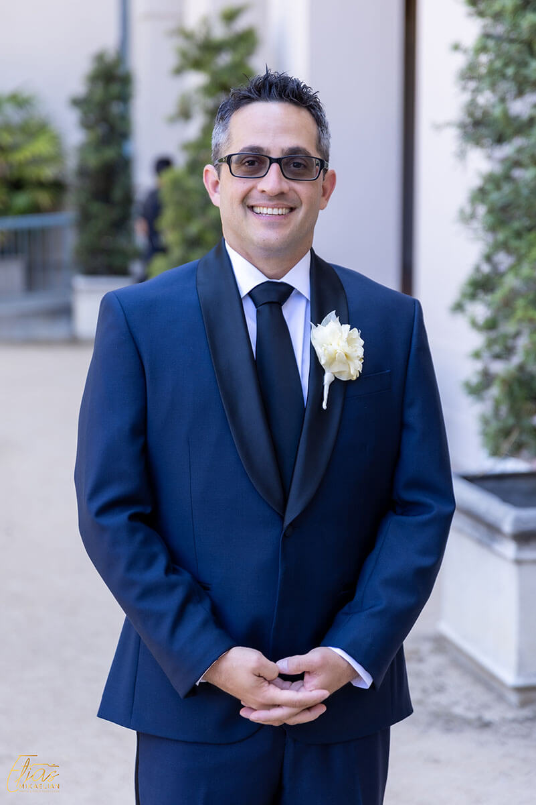

About Shawn
Shawn DePasquale is a screenwriter, comic book writer and letterer, and producer with over 20 years of experience bringing stories to life across multiple mediums.
As a comic book letterer, Shawn has worked with major publishers including Image Comics, Oni Press, IDW Publishing, Arcana Studios, and Devil's Due Comics. His lettering work appears in titles alongside some of the industry's top creators.
In film and television, he's held production roles across NBC, FX, TNT, and ABC, learning the ins and outs of visual storytelling from script to screen. He currently works as story editor for New York Times best-selling author Charles Soule.
As Chief Creative Officer at Macaulay Culkin's BunnyEars.com, Shawn oversaw satirical content and produced viral projects like Culkin's "Home Alone" Google commercial.

Whether he's crafting dialogue for comic panels, polishing screenplay structure, or shaping a story from concept to completion, Shawn brings the same dedication to every project: a love for the craft and an unshakeable belief in the Oxford comma. Also coffee. Lots of coffee. And ska music.
Narrative Strategy
Story Editing for NYT Best-Sellers and Script Development for Major Networks.
Technical Mastery
Professional Lettering for the industry's biggest indie publishers and Creative Direction for viral media.